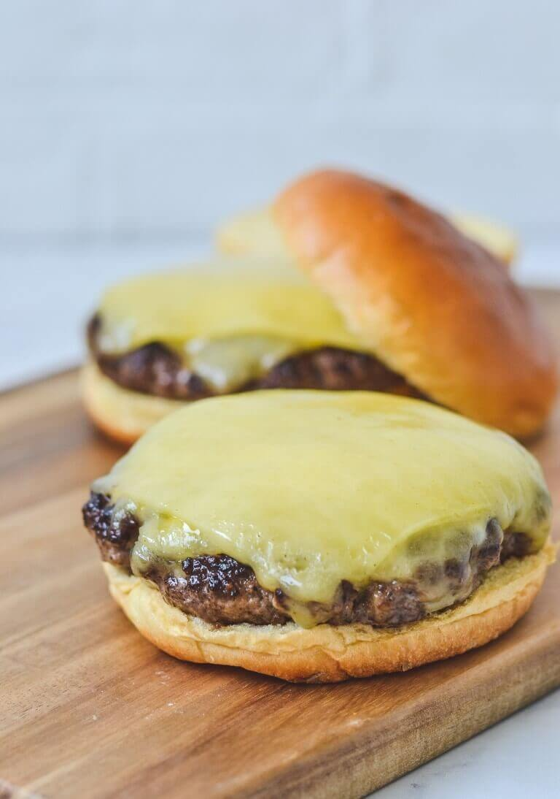

Pub-stye Cheese Burger

Juicy 1/4 lbs burger patty on soft brioche bun with all the toppings you could want.
Makes four burgers
This is a take on a classic pub-style burger. The burger is somewhat thick, depending on how you
like your burger, it can be between medium well to well done. Medium well can be a bit too rare for some people, but
you will never have a juicer burger until you have a burger cooked to medium well.
Ingredients
- 1 lbs 80/20 ground beef
- 4 slices of cheese of your choice (recommend ether America cheese or Swiss cheese)
- 4 brioche buns
- Soften butter
- Optional toppings
- Lettuce
- Tomato
- Onion
- Pickles
- Ketchup
- Muster
- Get a large cast-iron or stainless steel pan and put it over medium-high heat
- Divide the ground beef into 1/4th lbs balls
- Press the ground beef balls into round disk about 1 inch wider than the burger buns, then form a divot into the middle of the ground beef disk
- Salt and peeper both sides of the burger
- Butter the inside of the brioche bun and then toast it in the pan until golden brown
- Add a light layer of vegetable oil to the pan and wait until the oil starts to simmer
- Add the beef pates to the pan one at a time, make sure the pates are around 1 inch apart in the pan
- Cook the pates on one site for about 5 minutes
- Flip the pates over and then add the cheese
- Cook for another 5 minutes and then check the temperature of the burger, it should be at 160 degrees fahrenheit. If you do not have a food thermomotor, cut open the middle of the burger and it should be slightly pink
- On the bottom burger bun, put a layer of ketchup then the burger. Add the any of the toppings to the burger
- Put the top burger bun on the burger and enjoy